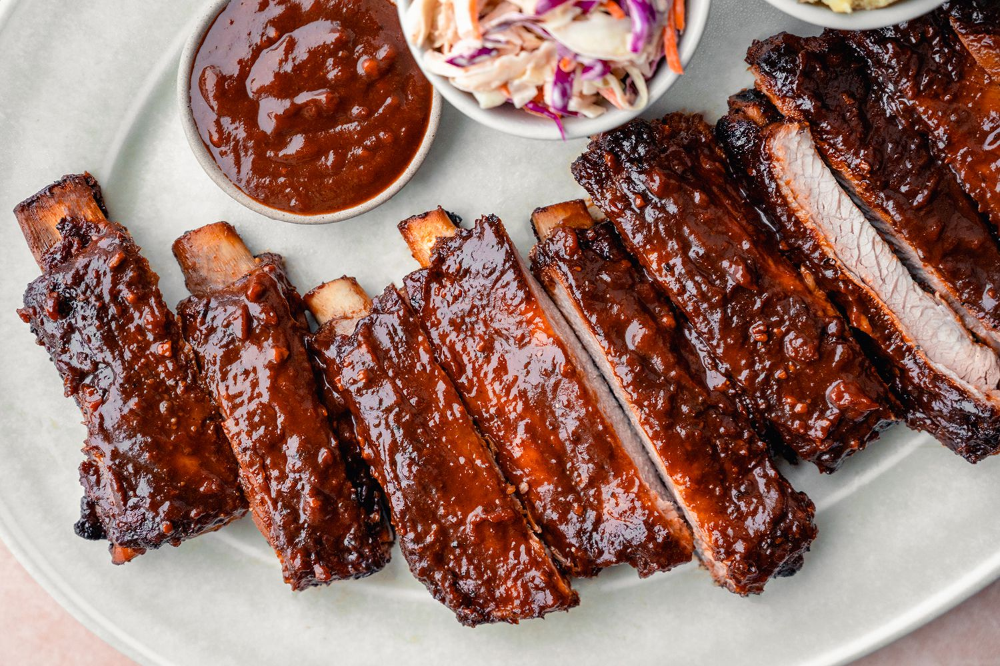

Porkribs recipe

Description
This is the best pork ribs recipe!
Ingredients needed to cook these pork ribs
- Pork ribs
- Butter
- Spice rub
- oven
How to make these ribs
- First rub down the ribs with all the spices
- Put the oven at a medium-high heat and slow cook for 8 hours
- After tender. rest for 2 hours then serve